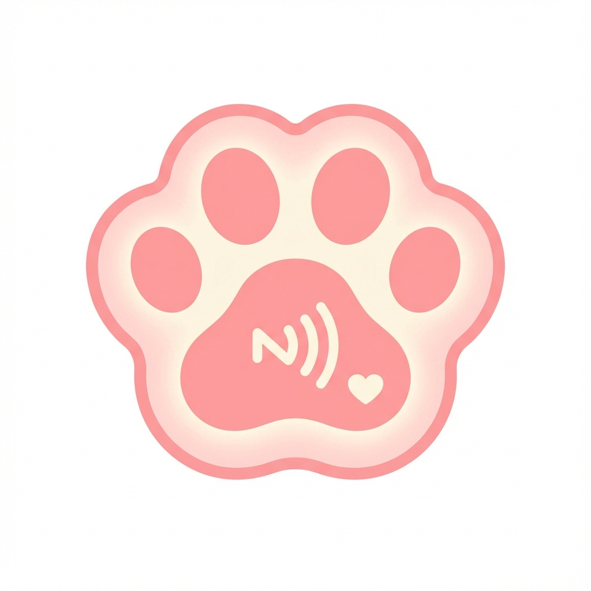

How to Use Your Guide
1
Follow the Paws
Look down! You will find Paw Print stickers on the museum floor. These trails will lead you to various exhibits and hidden gems.

2
Spot the NFC Tag
Beside each main attraction, look for the special Paw-shaped NFC Tag. It glows faintly when you get close!

3
Tap to Interact
Simply tap your phone on the tag. Your Maneki Neko guide will pop up to explain the history, offer guidance, or direct you to the nearest Quiet Room if you need a break.